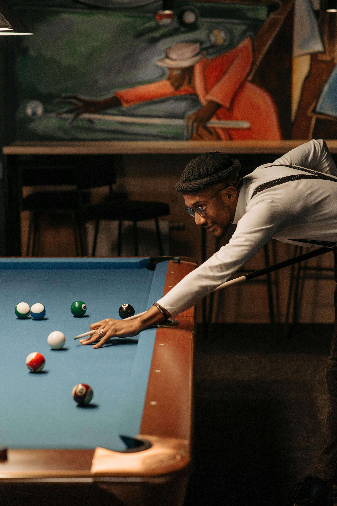

A game played on a billiard table with pockets, in which cues are used to strike three balls and points are made by caroms, pocketing an object ball, or caroming the cue ball into a pocket. In the UK, Australia, and other countries, the game is known simply as 'billiards'. plural noun: English billiards
Badminton is a racquet sport played using racquets to hit a shuttlecock across a net. Although it may be played with larger teams, the most common forms of the game are "singles" (with one player per side) and "doubles" (with two players per side). Badminton is often played as a casual outdoor activity in a yard or on a beach; formal games are played on a rectangular indoor court. Points are scored by striking the shuttlecock with the racquet and landing it within the other team's half of the court.

The PlayStation 5 (PS5) is a home video game console developed by Sony Interactive Entertainment. It was announced as the successor to the PlayStation 4 in April 2019, was launched on November 12, 2020, in Australia, Japan, New Zealand, North America, and South Korea, and was released worldwide one week later. The PS5 is part of the ninth generation of video game consoles, along with Microsoft's Xbox Series X/S consoles, which were released in the same month